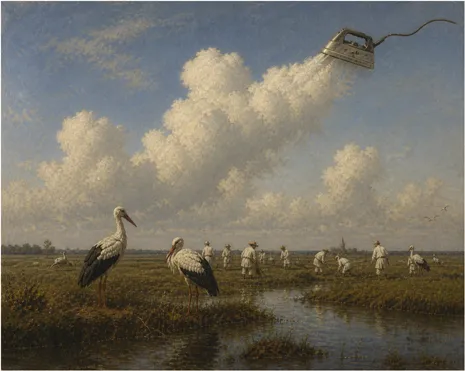

Wielkie żelazko z parą robi chmury cumulus humilis lub mediocris.
Mamy już typowe dla tej pory roku nagrzewanie gleby mocą promieniowania słonecznego na poziomie 800 watów na metr kwadratowy. To jakby na każdy kwadrat podłoża metr na metr przez wiele godzin dziennie postawić solidne żelazko. Dotyczy to głównie terenów zielonych, które jak żelazka z parą bez termostatu oddadzą tryliony litrów wody z liści i zobaczymy na niebie, nad Polską pierwszy raz w tym sezonie obłoki stworzone z wody oddanej z podgrzewanych roślin wokół nas. Zwykle są to cumulus humilis lub cumulus mediocris.
Jeśli ktoś ma już dość tej pięknej pogody to może obejrzeć moją rozmowę o Bliskim Wschodzie i Turcji. Jest to ważny element układanki, bo to Turcja już raz pokazała, że potrafi zdjąć palec prezydenta USA z atomowego przycisku wymierzonego w Iran.
ps. Eksplozje atomowe nad Hiroszimą i Nagasaki nie wpłynęły w żadnym stopniu na pogodę w tamtym rejonie. Rzekomy, atomowy czarny deszcz po wybuchu był skutkiem kolosalnego pożaru wielkiego drewnianego miasta zapalonego eksplozją, a nie samą bombą atomową.
Mówię, co wiem i wiem, o czym mówię! Bardzo gorąco na linii Turcja - inne Państwo na I.
U Piotra Szlachtowicza w perskiej koszuli komentuje Paweł Klimczewski. Zapraszam serdecznie!
Link do programu:Bardzo gorąco na linii Turcja - inne Państwo na I.
Paweł Klimczewski